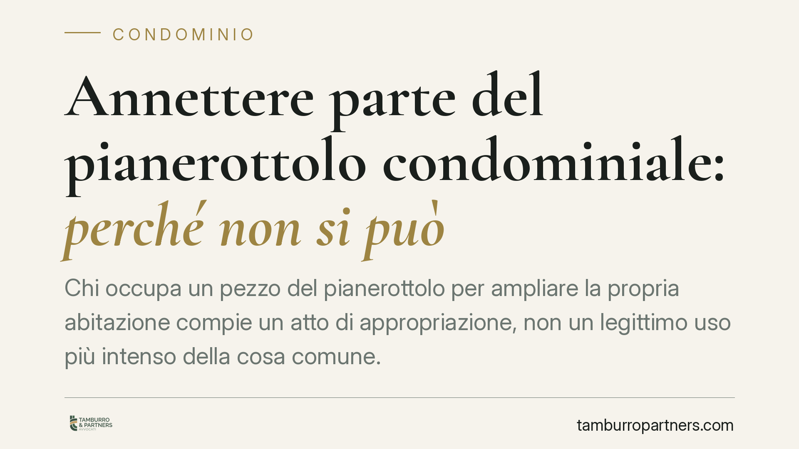

Annettere parte del pianerottolo condominiale: perché non si può
Chi occupa un pezzo del pianerottolo per ampliare la propria abitazione compie un atto di appropriazione, non un legittimo uso più intenso della cosa comune. Lo ha ribadito la Corte d'Appello di Caltanissetta con la sentenza n. 191/2026, che distingue nettamente tra uso paritario del bene condominiale e sottrazione dello stesso agli altri condòmini.

Il caso e la decisione
Un condòmino aveva incorporato nella propria unità immobiliare una porzione del pianerottolo e del vano scala, sostenendo di aver semplicemente esercitato un uso più intenso della cosa comune, facoltà che l'ordinamento riconosce a ogni partecipante al condominio.
La Corte d'Appello di Caltanissetta (sentenza n. 191/2026) ha respinto questa tesi. Secondo i giudici, sottrarre stabilmente uno spazio comune per annetterlo alla propria abitazione non è uso più intenso: è appropriazione. E l'appropriazione integra una turbativa del possesso in danno degli altri condòmini.
Inquadramento normativo
Il punto di riferimento è l'art. 1102 del Codice civile. La norma consente a ciascun condòmino di servirsi della cosa comune "purché non ne alteri la destinazione e non impedisca agli altri partecipanti di farne parimenti uso secondo il loro diritto".
Sono quindi due i limiti invalicabili: il rispetto della destinazione del bene e la salvaguardia del pari uso da parte di tutti gli altri. Finché il condòmino usa lo spazio comune in modo più frequente o più vantaggioso rispetto agli altri, resta nel perimetro della legittimità. Nel momento in cui lo occupa in via esclusiva e permanente, esce dall'art. 1102 c.c. ed entra nel campo dell'illecito.
Il pianerottolo e il vano scala rientrano tra le parti comuni ai sensi dell'art. 1117 c.c. La loro incorporazione in un'unità privata equivale a una modifica della titolarità del bene. E una simile modifica non può avvenire per iniziativa unilaterale, né può essere autorizzata dalla sola assemblea: incidendo sul diritto di proprietà di tutti, richiede il consenso negoziale scritto di ciascun condòmino.
Cosa cambia in concreto
La pronuncia chiarisce un confine spesso frainteso. Chi installa una scarpiera sul pianerottolo, appoggia una fioriera o collega momentaneamente la propria porta a un tratto del ballatoio non compie, di per sé, un atto di appropriazione. Il discrimine è la stabilità dell'occupazione e la sottrazione del bene all'uso altrui.
Quando l'occupazione diventa permanente ed esclusiva – muri, porte, ampliamenti che assorbono lo spazio comune – gli altri condòmini possono agire per la reintegrazione del possesso. Si tratta di un'azione, quella di reintegra (art. 1168 c.c.), che tutela chi è stato spogliato del possesso e che va esercitata entro un anno dallo spoglio.
È un errore ricorrente confidare nel silenzio dell'assemblea o nella tolleranza dei vicini. La tolleranza non produce alcun diritto: non trasforma un'occupazione abusiva in un titolo legittimo e non impedisce agli altri di reagire. Allo stesso modo, una delibera assembleare non può "sanare" l'annessione, perché l'assemblea non ha il potere di disporre della proprietà dei singoli.
Per chi ha già occupato lo spazio, l'assenza di un consenso scritto e unanime espone al rischio di dover ripristinare lo stato dei luoghi, con i relativi costi, oltre al risarcimento del danno.
Cosa fare in concreto
- Verifica il titolo. Prima di qualsiasi intervento sul pianerottolo o sul vano scala, controlla se esiste un atto scritto che ti attribuisce quel diritto. In assenza, lo spazio resta comune.
- Non confondere uso e appropriazione. Puoi usare intensamente la cosa comune, non sottrarla agli altri. Ogni intervento stabile ed esclusivo va valutato con cautela.
- Procurati il consenso di tutti. Per una incorporazione legittima serve l'accordo scritto di ciascun condòmino, non una semplice delibera assembleare. Formalizza l'intesa con un atto adeguato.
- Se sei il condòmino leso, muoviti per tempo. L'azione di reintegrazione del possesso ha un termine di decadenza di un anno dallo spoglio: raccogli prove (foto, testimonianze, verbali) e valuta subito il da farsi.
- Documenta lo stato dei luoghi. In caso di contestazione, la ricostruzione della situazione originaria è spesso decisiva. Conserva planimetrie, fotografie e ogni riscontro utile.
Una lettura d'insieme
La decisione della Corte d'Appello di Caltanissetta si inserisce in un orientamento consolidato: le parti comuni appartengono a tutti e nessuno può trasformarle in proprietà esclusiva senza il consenso di tutti gli altri. Il pianerottolo non è terra di nessuno da conquistare, ma spazio condiviso il cui uso trova nel diritto altrui il proprio limite naturale.
---
*Contributo informativo a cura di Tamburro & Partners - Avv. Giuseppe Tamburro. Non costituisce parere legale.*
Ogni condominio ha una storia a sé.
Se gestisci un'amministrazione e vuoi un confronto su una specifica questione condominiale, scrivi allo studio. Ti rispondiamo entro un giorno lavorativo.